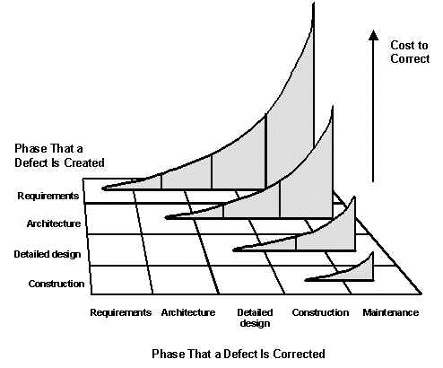
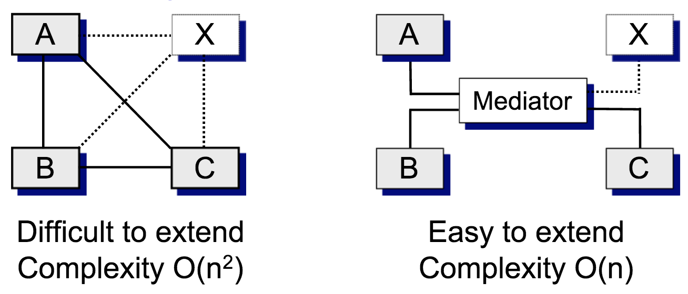
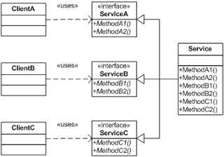
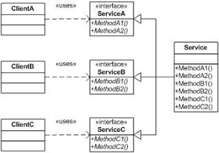
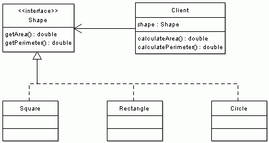

(A few) Software Engineering Best Practices
January, 2015
Agenda
- Curiosities about IT projects
- Software (Design) Degradation
- Principles of OO Class Design
- Code Complexity
- Making clear Functions
- Some reading...
Curiosities....
- 1/6 IT projects have an average cost overrun of 200% and a schedule overrun of 70%.
- 3/4 IT executives believe their projects are "doomed from the start".
- 1/3 IT projects were successfully completed on time and on budget over 2013.
- 1/5 IT projects fail: No value at all!
Most common causes for software failures:
Lack of user participation.
Poor communication among customers, developers, and users.
Sloppy development practices.
Vague, ambiguous, incomplete requirements.
A few interesting findings:
"It is hard to figure out what needs to be built"
"Not enough attention is paid to design"
Countless defects are injected which are only found after developers thought they were ready to ship.
Then, schedules are slipped to fix those defects...
Many projects end up being cancelled as their business cases are no longer valid...
Or the software couldn't be made to work reliably enough.
Among the software projects that do deliver:
On average, for every 1 dollar spent on development, 4 dollars are spent on maintenance!
So... What to do?
Think first: Better design... (next)
For large projects, Software design complexity is difficult to assess without using complexity metrics and measures.
One approach to controlling software maintenance costs is the utilization of software metrics during the development phase.
The long-term effect of high complexity is that the software will gradually degrade to a state whereby its maintenance is too costly or impossible.
Software degradation
Symptoms of Poor Design
Rigidity
The system is hard to change:
Every change forces many other changes to other parts of the system.
Changes propagate via dependencies to other modules
Fragility
Changes cause the system to break in places that have no conceptual relationship to the part that was changed.
Fixing the problems causes new problems...
Immobility
It is hard to disentangle the system into components that can be reused in the other systems.
Viscosity
Doing things right is harder than doing things wrong...
Telltale signs: When a change is needed, you are tempted to hack rather than to preserve the original design.
Needless Complexity
The design contains infrastructure that adds no direct benefit.
Too much anticipation of future needs...
Needless Repetition
The design contains repeating structures that could be unified under a single abstraction.
The same code appears over and over again....
Too much copy-paste...
Opacity
It is hard to read and understand.
It does not express its intent well...
The Broken Windows Theory
An abandoned building with a few broken windows is more likely to be vandalised if the windows aren’t repaired.
- Wilson & Kelling, 1982.
A successful strategy is to fix problems as soon as possible.
Caracteristics of Good Design
Minimal complexity:
Avoid making clever designs.
Clever designs are usually hard to understand.
Keep it simple
Ease of maintenance:
It is easy to understand and make changes.
Strong cohesion:
Related code from the same module/class should be bound together as far as possible.
Loose coupling:
Loose coupling means designing so that you hold connections among different parts of a program to a minimum.
All modules should be independent as far as possible.

Extensibility:
You should be able to change a piece of the system without causing a huge impact together pieces of the system.
Reusability:
Less code duplication, more code reuse.
Code can be reused in other systems.
High Fan-In
Refers to having a high number of classes that use a given class.
High fan-in implies that a system has been designed to make good use of utility classes at the lower levels in the system. E.g. Util classes.
Low Fan-Out
A given class should use a low-to-medium number of other classes.
Highfan-out (more than about seven) indicates a class uses a large number of other classes and may be overly complex.
Portability
A program can be run on lot of computers without complex configuration.
Leanness
No redundant modules/classes/functionalities.
Delete your fancy methods! Nobody is likely to use them...
Stratification
Try to keep the levels of decomposition stratified so you can view the system at any single level without dipping into other levels.

Also: Hexagonal Architecture, Ports and Adapters, Onion, etc...
Standard techniques
Use standardised, common approaches!
One Step Build, Testing Frameworks, Standard Libraries, Design Patterns...
SOLID
Principles to OO Class Design
Documentation helps, but documentation is not the solution — simplicity is.
- Single responsibility principle
- Open/closed principle
- Liskov substitution principle
- Interface segregation principle
- Dependency inversion principle
Introduced by Michael Feathers for the "First Five Principles" named by Robert C. Martin in the early 2000s
Single responsibility principle
Every module or class should have responsibility over a single part of the functionality provided by the software, and that responsibility should be entirely encapsulated by the class.

Open/closed principle
"Software entities (classes, modules, functions, etc.) should be open for extension, but closed for modification"
I.e., an entity should allow its behaviour to be extended without modifying its source code


Liskov Substitution Principle
"Subjects in a program should be replaceable with instances of their subtypes without altering the correctness of that program".
I.e, derived classes just extend without replacing the functionality of old classes.
That is, a user of a base class should continue to function properly if a derivative of that base class is passed to it.
Deriving square from rectangle is a classic example of violation of LSP.
Interface segregation principle
The essence of the principle is quite simple. If you have a class that has several clients, rather than loading the class with all the methods that the clients need, create specific interfaces for each client and multiply inherit them into the class.
 

Dependency inversion principle
Depending upon Abstractions: Dependency Inversion is the strategy of depending upon interfaces or abstract functions and classes, rather than upon concrete functions and classes.
The implication of this principle is quite simple. Every dependency in the design should target an interface, or an abstract class. No dependency should target a concrete class.

Package principles
-
Package Cohesion Principles
- Reuse-release equivalence principle (REP): "The Granule of reuse is the granule of release"
- Common-reuse principle (CRP): "Classes that aren't reused together should not be grouped together"
- Common-closure principle (CCP): "Classes that change together, belong together. "
-
Package Coupling Principles
- The Acyclic Dependencies Principle: "The dependencies between packages must not form cycles"
- The Stable Dependencies Principle: "Depend in the direction of stability"
- The Stable Abstractions Principle: "Stable packages should be abstract packages"
And many more...
- Program to Interface Not Implementation.
- DRY - Don't Repeat Yourself.
- Encapsulate What Varies.
- Depend on Abstractions, Not Concrete classes.
-
Least Knowledge Principle (Law of Demeter).
my_television.front_panel.switches.power.on();my_television.power_up();
- Favor Composition over Inheritance.
-
Hollywood Principle: Tell-Don't-Ask
- Send commands to objects telling them what you want done!
- Apply Design Pattern wherever possible
- Strive for Loosely Coupled System.
- KISS - Keep it Simple and Sweet / Stupid.
Code Complexity
Managing complexity is the most important technical topic in software development.
– Steve McConnell in Code Complete.
Several Studies have found a positive correlation between cyclomatic complexity and defects:
Methods that have the highest complexity tend to also contain the most defects.
Correlation between LOC and defects has not been proven yet!
Complexity
Halstead's Complexity Measures
Cyclomatic Complexity Measures
Function Point
Mantid Algorithms
Cyclomatic Complexity Number per routine
| File | CCN |
|---|---|
| EQSANSTofStructure::getTofOffset (NLOC=245) | 53 |
| FFT::exec (NLOC=180) | 45 |
| CompareWorkspaces::doComparison (NLOC=94) | 43 |
NLOC = lines of code without comments.
CCM > 15 is BAD!! CCN below 10 is desirable...
A few more (not so) interesting figures:
Functions GetDetOffsetsMultiPeaks::fitSpectra and ReflectometryReductionOne::transmissonCorrection have 14 parameters
By the way... A good number is maximum of 3!
length( DiffractionEventCalibrateDetectors::exec ) == 304
NLOC for GenerateEventsFilter.cpp == 1302
Handling Code complexity
Complexity is reduced by dividing a system into subsystems that are ideally independent.
Write shy code:
- Don't reveal yourself to others.
- Don't interact with too many people.
- Andy Hunt and Dave Thomas in The Pragmatic Programmer
Strong cohesion: Encapsulate for easier understanding
- Identify and isolate areas likely to change:
- Hiding sources of change so its effects are localized: e.g. bad design or construction, or data-size constraints.
Keeping coupling loose:
- Don't use semantic knowledge from other module's inner workings!
- Law of Demeter (LoD) or principle of least knowledge (next).
This clearly violates the LoD:
ws.getRun().getGoniometer().getEulerAngles('YZY')
Design patterns provide vocabulary for efficient communication, and embody accumulated wisdom over years.
However, DO NOT overuse them!!!
Meta-Programming
Put abstractions in code, details in metadata
Separation of Code and Data!
Example: If generating files DO NOT put tags (e.g. XML) in the code!
For Python, use: Django template language (DTL), Jinja2, etc...
ws = CropWorkspace({{data.ws_name}}, XMin={{data.xmin}}, XMax={{data.xmax}})
ws = Power({{data.ws_name}}, Exponent={{data.exponent}})
{% for file in data.files %}
ws_{{loop.index}} = Load({{file}})
{% endfor %}
data = {'ws_name' : 'abc',
'xmin' : 1,
'xmax' : 100,
'exponent' : 20,
'files' : ['/tmp/f1.nxs','/tmp/f2.nxs','/tmp/f3.nxs']
}
Good Practices for Functions
Design by Contract
- What does contract expect -
@precondition - What does contract guarantee? -
@postcondition - What does contract maintain? -
@invariant
It is the caller's responsibility to make sure the pre-condition is met.
PEP 0316 - Programming by Contract for Python
Status: Deferred
Alternatives:
- PyContract
- PyDBC
- decontractors
DbC in Python
from decontractors import *
@Precondition(lambda: x > 0 and y > 0)
@Postcondition(lambda: __return__ == (x + y))
def positive_nonzero_addition(x, y):
# Try changing the expression to return something else
return x + y # Won't work if at least one parameter is negative or zero
print positive_nonzero_addition(4, 1)
DbC in Python: Assertions do (part of) the job!
def positive_nonzero_addition(x, y):
assert x > 0, 'x must be positive!' assert y > 0, 'y must be positive!'
return x + y print positive_nonzero_addition(4, 1)
print positive_nonzero_addition(4, -1)
$ python -O 'filename' # Turns assertions off!
Law of Demeter
-- Peter Van Rooijen (Usenet)
- You can play with yourself.
- You can play with your own toys (but you can't take them apart),
- You can play with toys that were given to you.
- And you can play with toys you've made yourself.

Law of Demeter: Functions
The Law of Demeter for functions states that any method of an object should call only methods belonging to itself, any parameters that were passed in to the method, any objects it created, or any directly held component object.
class Demeter {
private:
A *a;
int func();
public:
void example(B& b);
}
void Demeter::example(B& b) {
C c;
// itself
int f = func();
// any parameters that were passed in to the method
b.invert();
a = new A();
// any objects created
a->setActive();
//any directly held component objects
c.print();
}
Law of Demeter: Cons
The cost:
You will be writing a large number of wrapper methods that simply forward the request on to a delegate.
These wrapper methods will impose both a runtime cost and a space overhead, which may be significant—even prohibitive—in some applications.
Replace Conditional with Polymorphism:
- Python factories
- C++: Non OOP vs OOP
Python: Simple Example
Regular conditional:
if extension == ".bat":
doBat()
elif extension == ".sh":
doSh()
(.....)
Cleaner (?):
doExtensions = {
".bat" : doBat,
".sh" : doSh,
(...)
}
doExtensions[extension]()
Refactoring: Replace Nested Conditional with Guard Clauses
Avoid Deep Nesting!
Before:
double getPayAmount() {
double result;
if (_isDead) result = deadAmount();
else {
if (_isSeparated) result = separatedAmount();
else {
if (_isRetired) result = retiredAmount();
else result = normalPayAmount();
};
}
return result;
};
After:
double getPayAmount() {
if (_isDead) return deadAmount();
if (_isSeparated) return separatedAmount();
if (_isRetired) return retiredAmount();
return normalPayAmount();
};
CCN is the same, but nesting depth is better!
See : Replace Nested Conditional with Guard Clauses
Try and leave this world a little better than you found it.
- Robert Baden-Powell, the founder of the "Scout Movement".
”Leave the code cleaner than you found it!”
MANTID
Sugestions
Classes
Single Responsability
Does your class represent more than one entity, or have more than one responsability???
If so, break it down!
Methods
Single Responsability
- Does the function title summarise its intent???
- If it doesn't, break it down!
- Too many parameters might be telling you something...
- Pre-conditions: What are valid input parameters (ranges, type, etc)?
- If you are the caller, don't forget to make sure the parameters are validated before!
- Post-conditions: What is supposed to be returned
- Can we use
assertionsonly in the test/development environment?
Methods 2
- Limit function size: VT100 size (24x80)?
- Comments:
- Avoid obvious comments!
- Function intent (Not what it does!)
- Choices made (i.e. why algorithm X and not Y)
- Limit Conditionals, nested Cycles and nested Conditionals
- Try to follow the Law of Demeter.
- Write code for others, not for you!
Use Code Complexity tools.
More
- Can we make Algorithms smaller?
- exec() should have few clean lines
- Can we separate functionality into independent packages?
- 'technique'.'facility'.'instrument'?
sans.sns sans.sns.eqsans geometry util.units util.loaders
Always code as if the person who ends up maintaining your code is a violent psychopath who knows where you live.
John Woods in comp.lang.c++ - Usage of comma operator, 1991.
References
ISO 9126
The ISO 9126-1 software quality model:
- Functionality
- Reliability
- Usability
- Efficiency
- Maintainability
- Portability